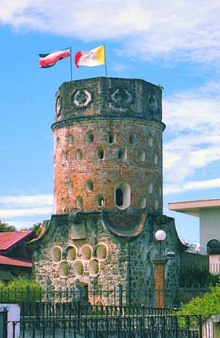

La ciudad de las flores

La ciudad de Heredia es conocida por la famosa frase tradicional de «La Ciudad de las Flores», debido justamente a la exuberante vegetación del área. Es la cuarta provincia del país, cuenta con 10 cantones y 43 distritos. Es la provincia más pequeña de Costa Rica. Se la conoce también como la «Provincia de las Flores».